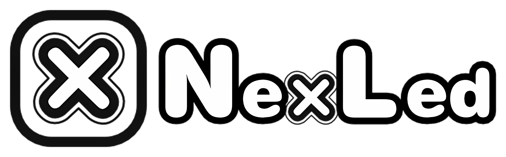
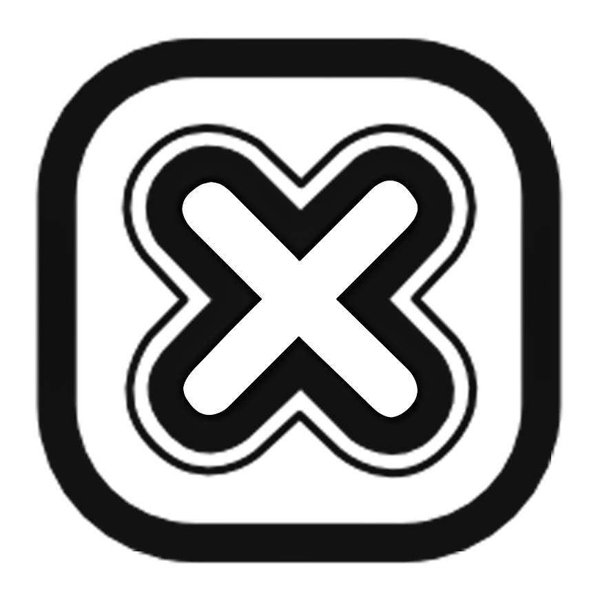

Logo
The Nexled logo is the primary visual identifier of the brand, presented in two core versions with strict usage guidelines.
Logo
Below is Nexled primary logo, presented in its two core versions: the full wordmark with symbol and the standalone symbol. Both are essential elements of the brand's identity. As stated earlier, the logo could not be altered due to legal constraints.
Symbol & Wordmark
Symbol Only
The entire visual system color palette, typography, graphic elements, and layout principles was developed based on the existing logo. Since it could not be changed, the author drew inspiration from its characteristics to reinforce and complement it. Its rounded geometry, simplicity, and technical precision serve as the foundation for all applications, ensuring consistency and immediate recognition across every touchpoint.
The symbol may be used independently in specific contexts where a more compact or iconic representation is needed, while the full version should remain the brand's primary signature.
Logo - Size & Margins
The Nexled logo is built on simple geometric forms and rounded corners, reflecting technical precision and modernity. The proportions between the symbol and the wordmark are fixed and must remain unchanged in every application. Altering the structure, stroke weights, or original spacing is not permitted.
Symbol & Wordmark
Minimum Sizes
Digital: 250 × 77 px
Print: minimum width of 45 mm
Symbol Only
Minimum Sizes
Digital: 64 × 64 px
Print: minimum height of 12 mm
To ensure legibility and visual impact, the logo must always be surrounded by a clear area. No text, images, or graphic elements may enter this protected space.
These rules guarantee that the Nexled identity remains sharp, consistent, and professional across all digital and printed formats.
Logo - Color Versions
Nexled has two primary logo versions: Color and Black & White.
The color version is the main signature and should be used whenever possible.
Color Version
Symbol & Wordmark
Symbol Only
The Black & White version is reserved for monochrome printing, manuals, or situations where color cannot be applied.
Black & White Version

Symbol & Wordmark

Symbol Only
These are the approved versions of the Nexled logo.
Logo - Application Rules
The Nexled logo must always be applied with consistency and precision. The examples below show incorrect applications of the logo uses that compromise clarity, recognition, and the integrity of the brand across all contexts.
Mixed versions
Mixing color with black & white
Custom colors
Other colors or gradients
Distorted
Stretched or distorted
NexLed
Using a different font
NexLed
Wordmark only